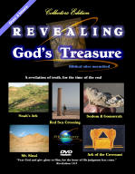
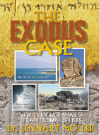
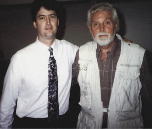
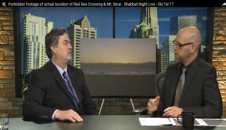
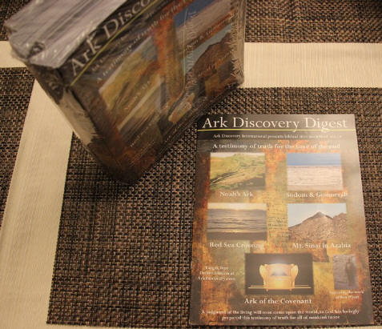
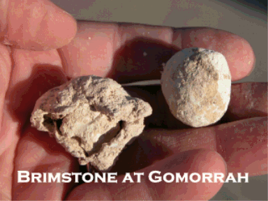
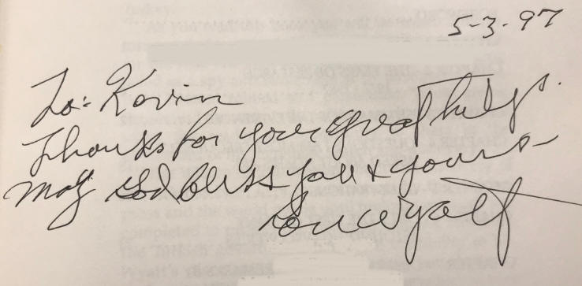

Are we surprised that the truth is rejected & unknown by the majority?
Home
Store
Noah's Ark
Sodom/Gomorrah
Red Sea Crossing
Mt. Sinai
Ark of Covenant
Ron Wyatt
Discovery News
Flyers
Presentations
Watch Videos
Bible Study
FAQ
More Discoveries
Comments
Contact Us

DVD
Revealing
God's Treasure

Features all five major
discoveries on one dvd.

paper, with 565
by Dr.
Lennart Moller
Features Red Sea crossing, Mt. Sinai, Sodom & Gomorrah
Order at
amazon.com

show-and-tell
demonstration of truth for mankind,
which will be shown to the world during the
mark of the beast showdown
Your source of information
on
Revealing God's Treasure
한국어 페이지
中文页面
español
русский

Your web host Kevin Fisher left, with Ron Wyatt,
who made all the discoveries you will see on this website.
These discoveries changed Kevin's life in 1984, when he first met Ron
and saw these incredible discoveries in a church presentation.
These discoveries are a wake up call to mankind,
regarding our soon judgment by God. Time to get ready!
Subscribe to our YouTube
Channel
click here and
then click subscribe

Saudi Arabia and Turkey
Above: Group of us near Noah's ark, standing next to government erected road sign in valley pointing to the ark.
New Book on the Discoveries!

New color book with many large photographs of the discovery sites. Mainly a
photo book, but goes into
detail in the ark of the covenant section. 8.5 x 11 inch size 154 pages,
with gloss paper.
Great for sharing and feasting
your eyes on these wonderful revelations of truth that God has brought out for
us to see. PDF form also. Order here.
Support our DVD Production,
purchase here
Quantity discounts when buying 3 or 10 that you can share with others
We are privileged to have a sneak preview of the discoveries
before the entire world will see them soon
of the discoveries
Donate here
Shabbat Night Live TV Programs

Michael Rood and Shabbat Night Live have hosted Kevin Fisher
who presented the discoveries in four programs. TV programs aired in 120
countries.
You may watch replays on YouTube or purchase DVDs:
October 2020 New Programs:
Purchase DVD from A Rood Awakening:
SINAI: New Discoveries with Kevin Fisher – A Rood Awakening! International (roodstore.com)
Cairo to Nuweiba:
https://www.youtube.com/watch?v=Q7YmCSPNB9I&feature=emb_logo
Nuweiba to Arabia:
https://www.youtube.com/watch?v=3yKsPZqwnmE
Split Rock and Elim:
https://www.youtube.com/watch?v=s17LCxUriQ4
Mt. Sinai and Golden Calf Altar:
https://www.youtube.com/watch?v=IMmaKzOsNks
2017 Programs:
Purchase DVDs from A Rood Awakening:
Ron Wyatt's Biblical Discoveries: "A.D. - Archaeology Discovered" – A Rood
Awakening! International (roodstore.com)
Ron Wyatt/Sodom & Gomorrah:
https://www.youtube.com/watch?v=7nFq6PCmj24
Red Sea Crossing/Mt Sinai:
https://www.youtube.com/watch?v=8y-uiccIiSY
Ark of Covenant:
https://www.youtube.com/watch?v=B8TRoQk6WUE
Noah's Ark:
https://www.youtube.com/watch?v=NX9neaUCBLw
|
________________________________________
______________________________________________
New two part series by Kevin Fisher on the Ark of the Covenant
discovery ____________________________________________________
Can we understand when the ten commandment stones are coming
out ___________________________________________________
Illustrated Biblical books
https://pinkoski.com/amazing-facts/ ____________________________________________________
_______________________________________________ New 4" x 6" gloss postcards you can share with others 70 for $9.00 includes shipping. See here _____________________________________________________ Latest video uploads to YouTube: Noah's Ark Drone Video 2nd Edition: https://www.youtube.com/watch?v=tvYs0vaqGoo TV Interview at Noah's Ark: https://www.youtube.com/watch?v=evHUuwqFJO4 __________________________________________ CAUTION Multiple recent dig announcements have been
made concerning Noah's ark,
http://www.kulturvarliklari.gov.tr/TR,44150/kazi-ve-yuzey-arastirmalari-faaliyetleri.html Don't take the word of someone excitedly
saying "we are going to have a dig this Summer." A government permit has to be
issued first, and we know that the government is reluctant to issue a permit for
this site per the government archaeologist we work with. Sad that we
have to sound this alarm. But I am being accused of calling Ankara and
shutting down _________________________________________________
New T-Shirts on the discoveries linked in our
Store _________________________________________________
New video on the Ark of the Covenant, its discovery, produced ________________________________________________
Photos from our May 2019 tour group at Noah's Ark __________________________________________________
Photos from December 2018 Israel and Nuweiba __________________________________________________
Photos from September 2018 Noah's Ark Visit __________________________________________________
Photos from April 2018 Noah's Ark Visit __________________________________________________
Free videos and magazine in Mandarin:
普通话杂志
Our magazine is now available for free download in English: www.ArkDiscovery.com/magazine.htm Our book Revealing God's Treasure Illustrated is now in PDF format also for download: www.ArkDiscovery.com/book.htm ___________________________________________________
Ryan Mauro visits Jebel el Lawz and releases film on Mt. Sinai https://www.youtube.com/watch?v=YjrxHqNy5CQ ___________________________________________________ __________________________________________________ New photos of the sea anchor stones. Also includes translation of Armenian writing on one stone __________________________________________________ _________________________________________________
Thamudic inscriptions at Jebel el Lawz were translated __________________________________________________
Dr. Robert C. Michelson, retired research scientist from
Georgia Tech _________________________________________________
NY Times Best Seller author Joel Richardson "fully convinced" _________________________________________________
We have the discoveries videos in Mandarin for our Chinese
friends __________________________________________________ Watch our drone video from Noah's Ark October 2017: https://www.youtube.com/watch?v=g0p143lxb5c __________________________________________________ Our Email update November 2017: http://hosted-p0.vresp.com/1324333/54e276bce4/ARCHIVE Make sure you are on our Vertical Response email list. Sign up is further down page. ____________________________________________________
New book out on the discoveries, full color, gloss paper, 8.5 x 11 size ______________________________________________
We have seen exclusive video of gold detection over the ark of the covenant that _____________________________________________
See photos from our visit to The Ark
Encounter, a life size Noah's ark ________________________________________________
www.PatternsOfEvidence.com
continues to work on part III of its _________________________________________________
New high resolution, digital, resistivity scans have been done at Noah's ark. ______________________________________________
Joseph was Imhotep of Egypt who built the step
pyramid and had grain storage nearby.
New DVD available titled Journey Back to Noah's
Ark. ______________________________________________
New App available that features the discoveries called What is Truth? _____________________________________________ Available NOW! Also in free PDF format
 ____________________________________________ _________________________________________________ NOAH Movie Review by Jim Pinkoski who was a friend of Ron's ________________________________________________ Reasons to believe Ron Wyatt DID find the Ark of the Covenant _________________________________________________ _________________________________________________ ______________________________________________ __________________________________________________ ______________________________________________ __________________________________________ Recent False discovery of Noah's Ark on Mt. Ararat: http://www.wnd.com/index.php?fa=PAGE.view&pageId=146941
http://blog.bibleplaces.com/2010/04/noahs-ark-discovery-exposed.html
|
|
E-Mail List Sign up for our news updates
We will keep your email confidential.
Sent out every four months or so.... |
|
| Join Our E-Mail List Above |
Sign up for our newsletter above
Kevin Fisher can present the discoveries in your church at no charge.
Distributing these DVDs
is a worthy
project
since these are awesome preachers for the Lord
2nd Edition Revealing God's Treasure DVD Sold Here NOW!
New added video segments, widescreen and higher resolution
Discounts when 3 or 10 ordered
|
Comment about the baseless critics: "I studied both of the [negative] sites you sent me regarding Ron Wyatt and his findings. Several things bother me: First, it was difficult for me to parse the criticisms of the actual archaeology as opposed to criticisms of the person and/or his associates. The words shyster and fraud appear numerous times. Yet at the same time I sense a kind of intellectual snobbery oozing from the pages. It seems evident that criticism regarding official credentials takes precedence over the substance of any actual discoveries. I find it curiously bothersome that neither site gives Ron any credit for anything positive whatsoever. That indicates to me that an ulterior agenda is at work. Something which Ron represents is apparently offensive, therefore the baby must be thrown out with the bathwater. They appear to have the attitude that he is a boil on the butt of legitimate archaeology. Further, broad sweeping generalizations are made about non-credentialed “diggers.” I think that is irresponsible ad hominem and snobbery.
|
Michael Rood on Ron Wyatt from Vimeo.

|
The Critics The critics have attacked the discoveries and/or Ron Wyatt for various reasons. Some do not have the faith to believe that God can perform miracles in these last days. Others do not believe that Ron Wyatt is telling the truth, (although we do not rely on his word alone because we have seen the evidence for ourselves, except the Ark of the Covenant.) Other critics are inwardly jealous that one man could find all these discoveries, but they are not considering that God was the source behind the work. But can we expect the world to believe what God is doing to prepare a show-and-tell demonstration for mankind at the end of time? Satan is at work to counteract that which God is doing, but we know God's purpose will be done in spite of what the arch-deceiver is doing. Friend, please look at the evidence and do not listen to the untruths that have been passed along in an un-Christian manner over the Internet which are designed to attack God's work. The evidence is real and will allow one to decide for themselves if the discoveries are from God or Satan. We don't have to wait for a scientific community to tell us what is genuine, as they did not believe in the ark before the Flood, and they still do not believe in it today. |
"Do not believe any of these discoveries, they are nothing but lies!"
Satan
It is amazing that some Christians are on the
side of Atheists,
attacking this wonderful material. Darkness wins.
|
Here near the end of time God is providing evidence to validate the authenticity of the Bible. Most of the world today does not believe in the Bible or Jesus. Before Jesus returns to take His faithful home with Him, everyone on earth will take a stand for or against Him in the way they worship. These biblical, archaeological evidences of God's love and truth will play a major role in displaying for the last time, God's true form of worship. The mark of the beast will be presented, a false form and a true form of worship will be placed before mankind, and only those who follow Jesus and His commandments will be saved.
|

Above: Example of Ron Wyatt's kindness and sincerity
BOOKMARK OUR SITE!
Web site copyright 2000-2021
Website operated by
Ark Discovery International, Inc.
PO Box 746
Sparta, TN 38583